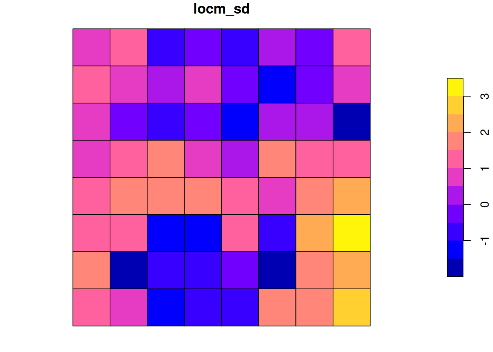
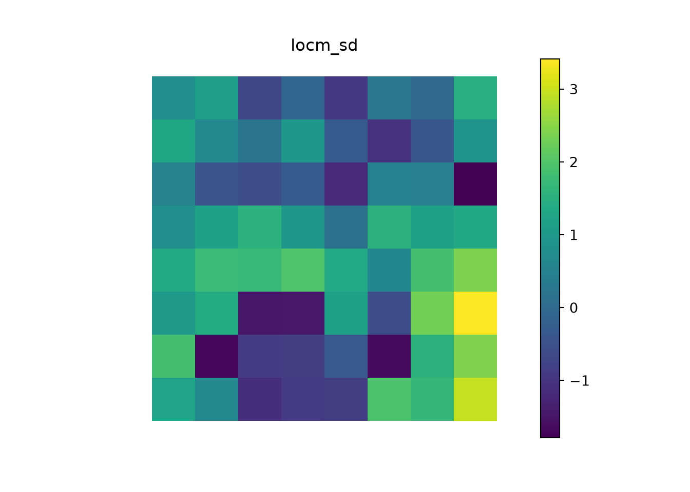
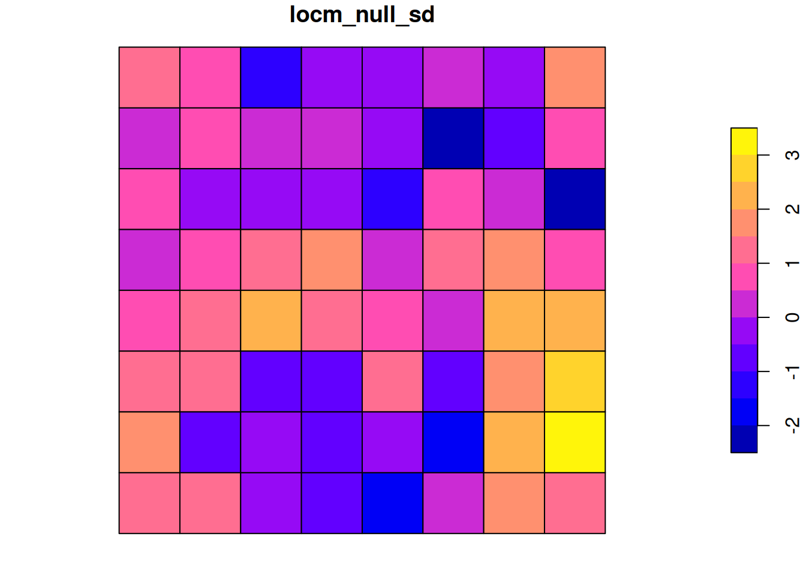
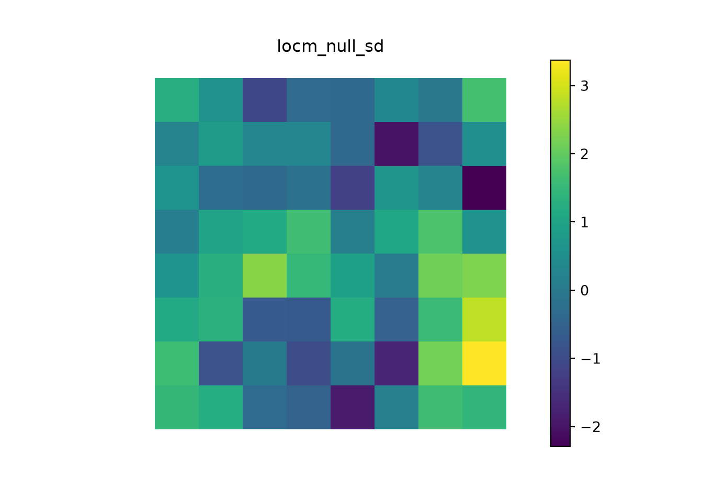
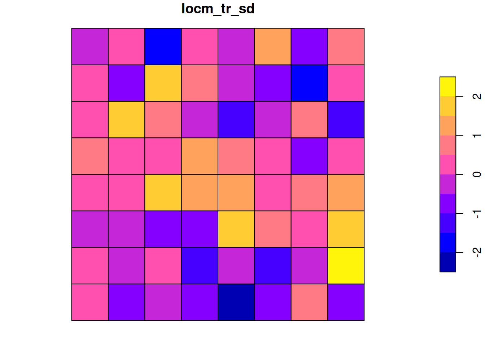
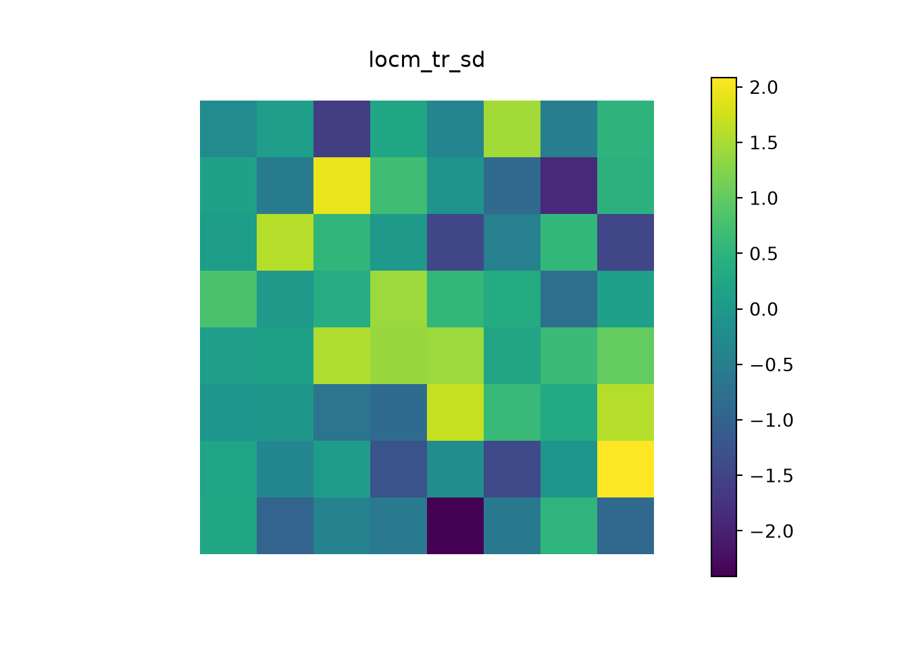

15 Measures of spatial autocorrelation
import numpy as np
import pandas as pd
import geopandas as gpd
import shapely
import matplotlib.pyplot as plt
from scipy.stats import norm, gaussian_kde
from statsmodels.stats.multitest import multipletests
from libpysal import weights
# the objects of exercise 14.3: 8 x 8 chessboard, rows from the top down
cells = [(x, y) for y in range(8, 0, -1) for x in range(1, 9)]
grd = gpd.GeoDataFrame(
{"col": ["black" if (x + y) % 2 == 0 else "white" for x, y in cells]},
geometry=[shapely.box(x - .5, y - .5, x + .5, y + .5) for x, y in cells])
rook = weights.Rook.from_dataframe(grd, use_index=False)
queen = weights.Queen.from_dataframe(grd, use_index=False)Exercise 15.1
Re-using the objects from exercise 14.3, we have:
xy <- data.frame(expand.grid(1:8, 1:8), col=rep(c(rep(c("black", "white"), 4), rep(c("white", "black"), 4)), 4))
library(stars)
# Loading required package: abind
(xy |> st_as_stars() |> st_as_sf() -> grd)
# Simple feature collection with 64 features and 1 field
# Geometry type: POLYGON
# Dimension: XY
# Bounding box: xmin: 0.5 ymin: 0.5 xmax: 8.5 ymax: 8.5
# CRS: NA
# First 10 features:
# col geometry
# 1 white POLYGON ((0.5 8.5, 1.5 8.5,...
# 2 black POLYGON ((1.5 8.5, 2.5 8.5,...
# 3 white POLYGON ((2.5 8.5, 3.5 8.5,...
# 4 black POLYGON ((3.5 8.5, 4.5 8.5,...
# 5 white POLYGON ((4.5 8.5, 5.5 8.5,...
# 6 black POLYGON ((5.5 8.5, 6.5 8.5,...
# 7 white POLYGON ((6.5 8.5, 7.5 8.5,...
# 8 black POLYGON ((7.5 8.5, 8.5 8.5,...
# 9 black POLYGON ((0.5 7.5, 1.5 7.5,...
# 10 white POLYGON ((1.5 7.5, 2.5 7.5,...
(grd$col |> factor() -> COL) |> table()
#
# black white
# 32 32
library(spdep)
rook <- poly2nb(grd, queen=FALSE)
queen <- poly2nb(grd, queen=TRUE)grd.col.value_counts().sort_index() # the factor COL, tabulated
# col
# black 32
# white 32
# Name: count, dtype: int64
# binary neighbour matrices (style "B")
B_rook, B_queen = rook.full()[0], queen.full()[0]In the rook case, no black:black or white:white neighbours are found, differing greatly from the expected values, which are based on non-free sampling from the proportions of colours in the data. Highly significant spatial autocorrelation is detected:
(jc_r <- joincount.multi(COL, listw=nb2listw(rook, style="B")))
# Joincount Expected Variance z-value
# black:black 0.000 27.556 8.325 -9.5503
# white:white 0.000 27.556 8.325 -9.5503
# white:black 112.000 56.889 27.205 10.5662
# Jtot 112.000 56.889 27.205 10.5662# Python has no multi-colour join count test with analytical moments;
# this implements the two-colour case of spdep::joincount.multi (non-free sampling)
def joincount_multi(f, B):
f = np.asarray(f); lev = np.unique(f); n = len(f)
S0 = B.sum(); S1 = 0.5 * ((B + B.T) ** 2).sum(); S2 = ((B.sum(1) + B.sum(0)) ** 2).sum()
n1, n2, n3, S02 = n - 1, n - 2, n - 3, S0 ** 2
nt = np.array([(f == l).sum() for l in lev], float)
rows = []
for l, m in zip(lev, nt): # same-colour joins
J = 0.5 * B[np.ix_(f == l, f == l)].sum()
E = S0 * m * (m - 1) / (2 * n * n1)
V = (S1 * m * (m - 1) / (n * n1)
+ (S2 - 2 * S1) * m * (m - 1) * (m - 2) / (n * n1 * n2)
+ (S02 + S1 - S2) * m * (m - 1) * (m - 2) * (m - 3) / (n * n1 * n2 * n3))
rows.append((f"{l}:{l}", J, E, 0.25 * V - E ** 2))
a, b = nt; prod = a * b # different-colour joins
J = B[np.ix_(f == lev[1], f == lev[0])].sum()
E = S0 * prod / (n * n1)
V = (2 * S1 * prod / (n * n1)
+ (S2 - 2 * S1) * prod * (a + b - 2) / (n * n1 * n2)
+ 4 * (S02 + S1 - S2) * a * (a - 1) * b * (b - 1) / (n * n1 * n2 * n3))
rows.append((f"{lev[1]}:{lev[0]}", J, E, 0.25 * V - E ** 2))
out = pd.DataFrame(rows, columns=["", "Joincount", "Expected", "Variance"]).set_index("")
out["z-value"] = (out.Joincount - out.Expected) / np.sqrt(out.Variance)
out.loc["Jtot"] = out.iloc[-1] # with two colours the total equals the mixed joins
return out
COL = grd.col.to_numpy()
jc_r = joincount_multi(COL, B_rook)
jc_r
# Joincount Expected Variance z-value
#
# black:black 0.0 27.555556 8.324978 -9.550314
# white:white 0.0 27.555556 8.324978 -9.550314
# white:black 112.0 56.888889 27.204672 10.566166
# Jtot 112.0 56.888889 27.204672 10.566166In the queen neighbour case, no spatial autocorrelation is found, despite a chessboard looking spatially structured:
joincount.multi(COL, listw=nb2listw(queen, style="B"))
# Joincount Expected Variance z-value
# black:black 49.000 51.667 23.616 -0.5487
# white:white 49.000 51.667 23.616 -0.5487
# white:black 112.000 106.667 47.796 0.7714
# Jtot 112.000 106.667 47.796 0.7714joincount_multi(COL, B_queen)
# Joincount Expected Variance z-value
#
# black:black 49.0 51.666667 23.615665 -0.548743
# white:white 49.0 51.666667 23.615665 -0.548743
# white:black 112.0 106.666667 47.795993 0.771441
# Jtot 112.0 106.666667 47.795993 0.771441This is because we have chosen to see all eight neighbour grid cells as neighbours (away from the edges of the board), so the two categories occur equally often as neighbour values, as expected.
Exercise 15.2
First, create an uncorrelated variable, and confirm that it is uncorrelated:
set.seed(1)
x <- rnorm(nrow(grd))
moran.test(x, nb2listw(queen, style="W"), randomisation=FALSE, alternative="two.sided")
#
# Moran I test under normality
#
# data: x
# weights: nb2listw(queen, style = "W")
#
# Moran I statistic standard deviate = 0.27024, p-value =
# 0.787
# alternative hypothesis: two.sided
# sample estimates:
# Moran I statistic Expectation Variance
# 0.002292497 -0.015873016 0.004518556def moran_test(x, B):
"""Moran's I test under normality, two-sided, row-standardized weights"""
W = B / B.sum(1, keepdims=True); n = len(x)
S0 = W.sum(); S1 = 0.5 * ((W + W.T) ** 2).sum(); S2 = ((W.sum(1) + W.sum(0)) ** 2).sum()
z = x - x.mean(); I = n / S0 * (z @ W @ z) / (z @ z)
E = -1 / (n - 1)
V = (n * n * S1 - n * S2 + 3 * S0 ** 2) / (S0 ** 2 * (n * n - 1)) - E ** 2
Z = (I - E) / np.sqrt(V)
return pd.Series(dict(I=I, expectation=E, variance=V, z=Z, p_value=2 * norm.sf(abs(Z))))
# the random numbers of the R solution (set.seed(1); rnorm(64)), as numpy cannot reproduce R's generator
xd = pd.read_csv("data/ch15_x.csv")
x, Var1 = xd.x.to_numpy(), xd.Var1.to_numpy().astype(float)
moran_test(x, B_queen)
# I 0.002292
# expectation -0.015873
# variance 0.004519
# z 0.270239
# p_value 0.786976
# dtype: float64Next inject patterning into the variable by adding a linear trend:
x_t <- x + (0.15 * xy$Var1)
moran.test(x_t, nb2listw(queen, style="W"), randomisation=FALSE, alternative="two.sided")
#
# Moran I test under normality
#
# data: x_t
# weights: nb2listw(queen, style = "W")
#
# Moran I statistic standard deviate = 3.0064, p-value =
# 0.002644
# alternative hypothesis: two.sided
# sample estimates:
# Moran I statistic Expectation Variance
# 0.186218071 -0.015873016 0.004518556x_t = x + 0.15 * Var1
moran_test(x_t, B_queen)
# I 0.186218
# expectation -0.015873
# variance 0.004519
# z 3.006404
# p_value 0.002644
# dtype: float64Test again having taken the residuals from a linear model removing the injected trend:
lm.morantest(lm(x_t ~ xy$Var1), nb2listw(queen, style="W"), alternative="two.sided")
#
# Global Moran I for regression residuals
#
# data:
# model: lm(formula = x_t ~ xy$Var1)
# weights: nb2listw(queen, style = "W")
#
# Moran I statistic standard deviate = 0.28036, p-value =
# 0.7792
# alternative hypothesis: two.sided
# sample estimates:
# Observed Moran I Expectation Variance
# -0.012449399 -0.030600358 0.004191544def lm_morantest(y, X, B):
"""Moran's I test for the residuals of a linear model (Cliff & Ord), two-sided"""
W = B / B.sum(1, keepdims=True); U = 0.5 * (W + W.T); N, p = X.shape
S0 = U.sum(); S1 = 0.5 * ((2 * U) ** 2).sum()
XtXinv = np.linalg.inv(X.T @ X)
u = y - X @ XtXinv @ X.T @ y # residuals
I = N / S0 * (u @ U @ u) / (u @ u)
Z_ = U @ X; C1 = X.T @ Z_; C3 = XtXinv @ C1
trA = np.trace(C3); EI = -(N * trA) / ((N - p) * S0)
trA2 = np.trace(C3 @ C3); trB = np.trace(4 * XtXinv @ (Z_.T @ Z_))
VI = (N * N / (S0 * S0 * (N - p) * (N - p + 2))) * (S1 + 2 * trA2 - trB - 2 * trA ** 2 / (N - p))
Z = (I - EI) / np.sqrt(VI)
return pd.Series(dict(I=I, expectation=EI, variance=VI, z=Z, p_value=2 * norm.sf(abs(Z))))
X_trend = np.column_stack([np.ones(64), Var1]) # x_t ~ Var1
lm_morantest(x_t, X_trend, B_queen)
# I -0.012449
# expectation -0.030600
# variance 0.004192
# z 0.280358
# p_value 0.779203
# dtype: float64This is important to understand because the spatial patterning in a variable of interest, and picked up by a global measure of spatial autocorrelation, may be driven by an omitted variable. If we cannot add that variable, a latent variable or mixed effects model may be a good choice.
Exercise 15.3
False discovery rate adjustment is required when conducting repeated tests on the same data set. Usually, local measures of spatial autocorrelation are calculated for all the observations in a data set, and so constitute repeated tests. When repeated tests are conducted, the usual reading of confidence intervals and probability values must be adjusted to take the repeated use of the data into account.
Exercise 15.4
If we start with the standard local Moran’s \(I_i\) for the random values with a slight 1D trend, upgraded to analytical conditional standard deviates, but with only the standard intercept-only mean model, we have a starting point; a fair number of the values exceed 2:
locm <- localmoran(x_t, nb2listw(queen, style="W"))def local_moran(x, B):
"""local Moran's I, with analytical conditional moments, two-sided"""
W = B / B.sum(1, keepdims=True); n = len(x); z = x - x.mean(); lz = W @ z
s2 = (z ** 2).sum() / n; Ii = z / s2 * lz
Wi, Wi2, m2 = W.sum(1), (W ** 2).sum(1), (z * z).sum() / n
E = -(z ** 2 * Wi) / ((n - 1) * m2)
V = (z / m2) ** 2 * (n / (n - 2)) * (Wi2 - Wi ** 2 / (n - 1)) * (m2 - z ** 2 / (n - 1))
Z = (Ii - E) / np.sqrt(V)
return pd.DataFrame(dict(Ii=Ii, E_Ii=E, Var_Ii=V, Z_Ii=Z, p_value=2 * norm.sf(abs(Z))))
locm = local_moran(x_t, B_queen)grd$locm_sd <- locm[, 4]
plot(grd[, "locm_sd"]) 
def map_plot(values, name):
grd.assign(**{name: values}).plot(column=name, legend=True)
plt.axis("off"); plt.title(name); plt.show()
map_plot(locm.Z_Ii.to_numpy(), "locm_sd")
If we apply false discovery rate adjustment, we have just one significant measure:
In the first Saddlepoint approximation also for the random values with a slight 1D trend, the distribution of standard deviates shifts leftward, with both positive and negative values beyond abs(2):
lm_null <- lm(x_t ~ 1)
locm_null <- summary(localmoran.sad(lm_null, nb=queen, style="W"))def local_moran_sad(y, X, B):
"""saddlepoint approximation for local Moran's I (row-standardized "W" style),
for the residuals of the linear model y ~ X; two-sided"""
n, p = X.shape; m = n - p - 2
XtXinv = np.linalg.inv(X.T @ X)
u = y - X @ XtXinv @ X.T @ y; utu = u @ u
D = 1 / B.sum(1); out = []
for i in range(n):
Vi = np.zeros((n, n)); w = n * D[i] * B[i] / 2 # symmetric "star" matrix for region i
Vi[i, :] = w; Vi[:, i] = w
Ii = u @ Vi @ u / utu
ViX = Vi @ X; MViM = X.T @ ViX @ XtXinv
t1 = -np.trace(MViM)
t2 = (Vi ** 2).sum() - 2 * np.trace(ViX.T @ ViX @ XtXinv) + np.trace(MViM @ MViM)
e1 = 0.5 * (t1 + np.sqrt(2 * t2 - t1 ** 2)); en = 0.5 * (t1 - np.sqrt(2 * t2 - t1 ** 2))
l, h, mi = en, e1, Ii
a_ = m * mi * (l + h - 2 * mi) + mi * (3 * l + 3 * h - 4 * mi) - 2 * l * h
b_ = (m + 2) * mi * (l - mi) * (h - mi)
c1 = l ** 2 * mi ** 2 * (m + 1) ** 2 + h ** 2 * mi ** 2 * (m + 1) ** 2
c2 = 2 * l * h * (2 * l * h - 2 * l * mi - 2 * h * mi - 2 * m * mi ** 2 - m ** 2 * mi ** 2 + mi ** 2)
om = 0.25 * (a_ - np.sqrt(c1 + c2)) / b_
taumi = np.concatenate([[e1], np.zeros(m), [en]]) - Ii
r = np.sign(om) * np.sqrt(np.log(1 - 2 * om * taumi).sum())
uu = om * np.sqrt(2 * (taumi ** 2 / (1 - 2 * om * taumi) ** 2).sum())
sad = r - np.log(r / uu) / r
out.append((Ii, sad, 2 * norm.sf(abs(sad))))
return pd.DataFrame(out, columns=["Ii", "Saddlepoint", "Pr_Sad"])
locm_null = local_moran_sad(x_t, np.ones((64, 1)), B_queen) # x_t ~ 1grd$locm_null_sd <- locm_null[, "Saddlepoint"]
plot(grd[, "locm_null_sd"]) 
map_plot(locm_null.Saddlepoint.to_numpy(), "locm_null_sd")
If we apply false discovery rate adjustment, we also have just one significant measure:
Once we analyse a model including the 1D trend, most of the distribution of standard deviate values is between -2 and 2:
lm_trend <- lm(x_t ~ xy$Var1)
locm_tr <- summary(localmoran.sad(lm_trend, nb=queen, style="W"))locm_tr = local_moran_sad(x_t, X_trend, B_queen) # x_t ~ Var1grd$locm_tr_sd <- locm_tr[, "Saddlepoint"]
plot(grd[, "locm_tr_sd"]) 
map_plot(locm_tr.Saddlepoint.to_numpy(), "locm_tr_sd")
If we apply false discovery rate adjustment, we now have no significant measures, as expected:
localmoran.sad() or localmoran.exact() provide both richer mean models, and estimates of the standard deviates built on the underlying spatial relationships for each observation, rather than analytical or permutation assumptions for the whole data set. This is achieved at the cost of longer compute times and larger memory use, especially when the Omega= argument to localmoran.sad() or localmoran.exact.alt() is used, because this is a dense \(n \times n\) matrix.